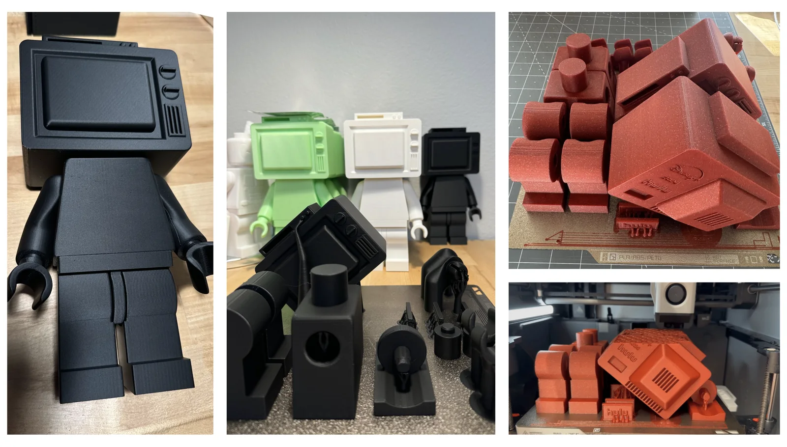
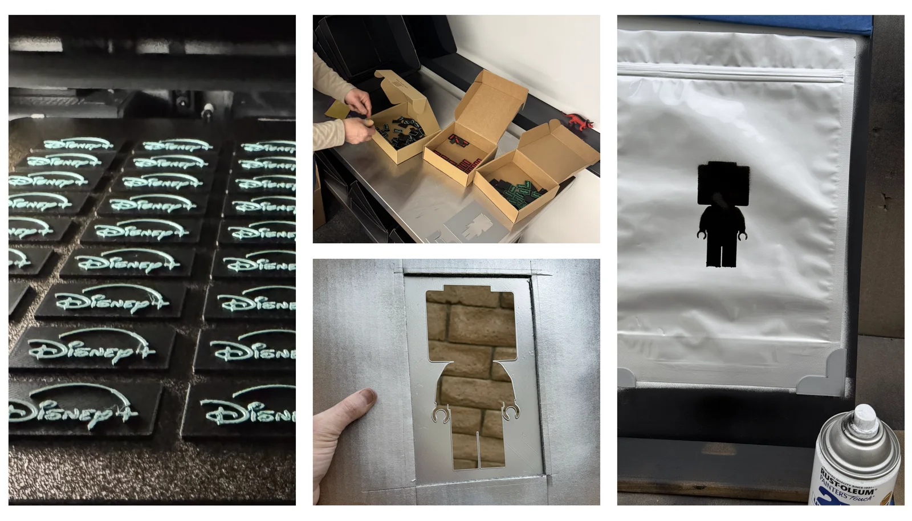
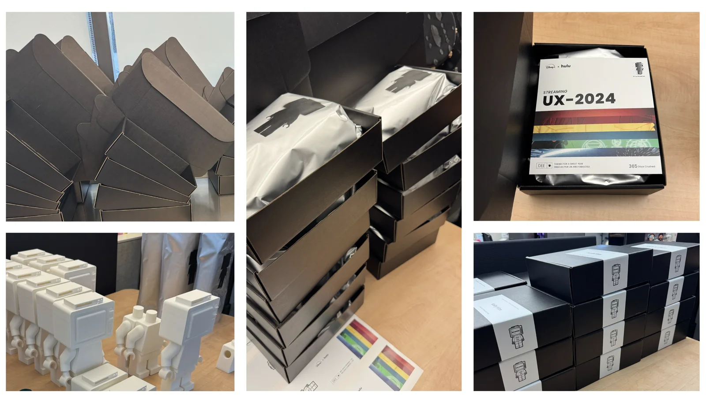

1,225 hours of print time. 64 pounds of filament. 100 hand-made gifts. Culture is something you make.
100 hand-made gifts across six brands, each designed, printed, painted, and packaged by hand and sealed in a blind bag with a signed card. Proof you can hold that culture is something you make.



The Streamer was a 3D-printed modular toy system - figures I designed, printed, painted, and packaged entirely by hand, spanning Disney+, Hulu, ESPN, Marvel, Nat Geo, and Star Wars.
Six brands, a hundred figures, one printer running almost around the clock. The first runs failed - warped parts, prints that pulled off the bed - so I built two custom jigs, dialed it in, and let it run. The failures were not the setback. They were the part where it started to work.
I designed the figures, the cards, and the packaging, secured the budget, and covered the balance myself. But I didn't run the line alone. Hansen Smith built it with me - he sharpened the cassette design, rigged a jig for painting the bags, and ran a third printer the production run couldn't have happened without. A month of late nights and a homemade assembly line, two people turning a pile of parts into a hundred finished gifts.
The point was never the gift. It was the message underneath it: we build things here. We make things. We do not just ship decks and attend standups.
Culture is not a value on a wall. It is what leaders do when no one is requiring them to do it. I have spent my own money and my own time building it, every year - and the people who build it with me are the proof it is real.
Then Hansen did something no one asked for: he made me a custom one of my own. Nobody else would have thought to. That's culture doing exactly what it's supposed to - you put making and generosity into a team, and it comes back around.
It was never meant to be some profound metaphor for team culture. But if you want to make it a symbol of the team's limitless potential, I certainly can't stop you.
From the card in every bag.